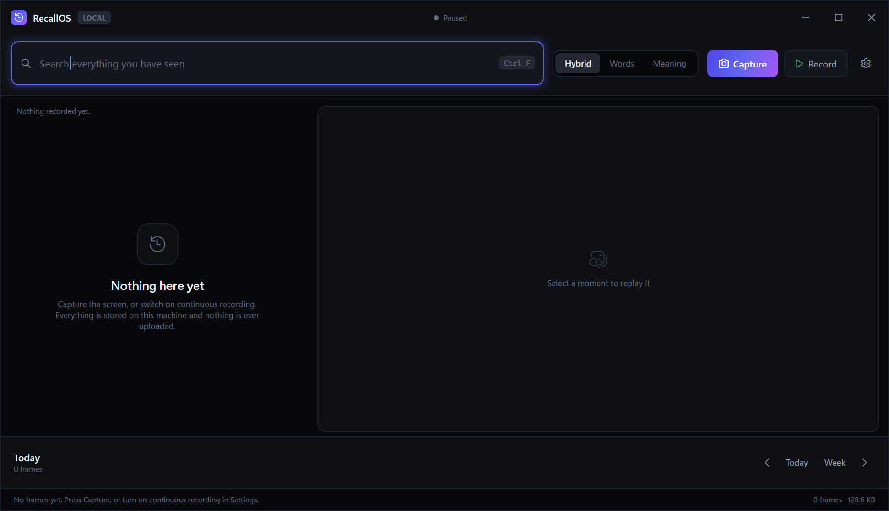
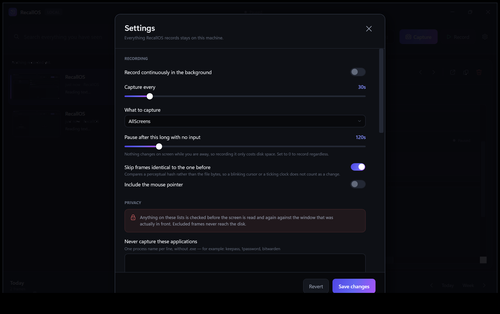

RecallOS records what you see, reads the text on it, and makes every moment searchable — by the words that were on screen, or just by what you meant.
Four stages, split so the slow ones never block the fast ones. Pressing Record starts a loop that keeps going until you stop it.
Win32 BitBlt over the virtual screen, a single monitor, or just the focused window. DPI-aware, so scaled displays stay sharp.
Tesseract reads the text with per-word geometry, on a background queue. A frame is visible the instant it is captured, long before its text arrives.
Text is split into paragraph-sized chunks, indexed in SQLite FTS5 and embedded as vectors so both exact words and rough meaning can find it.
Search, scrub the activity timeline, then replay the original screenshot beside the text that was on it.
A live mock-up of the real query syntax, running on sample frames. Filters, phrases, dates and the three ranking modes all behave as they do in the app.
Dark, native, and out of the way — the interface exists to show your screenshots, not to compete with them.


A tool that watches your screen has to be accountable to the person it watches. These are guarantees enforced in code and covered by tests — not promises.
v1.0 is out and complete. Here is what it already does, and what is being built next.
Unzip it, run it. Nothing to install, no account, no sign-in.
Windows 10 or 11 · 76 MB · Installs in seconds with no administrator rights, adds Start Menu and Desktop shortcuts, and opens when it finishes. Prefer no installer? Download the portable version.